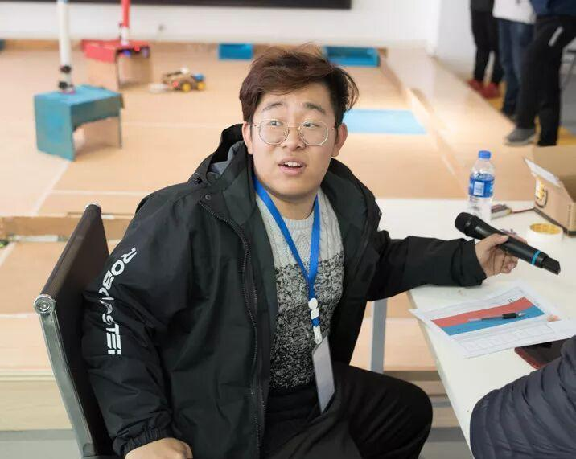
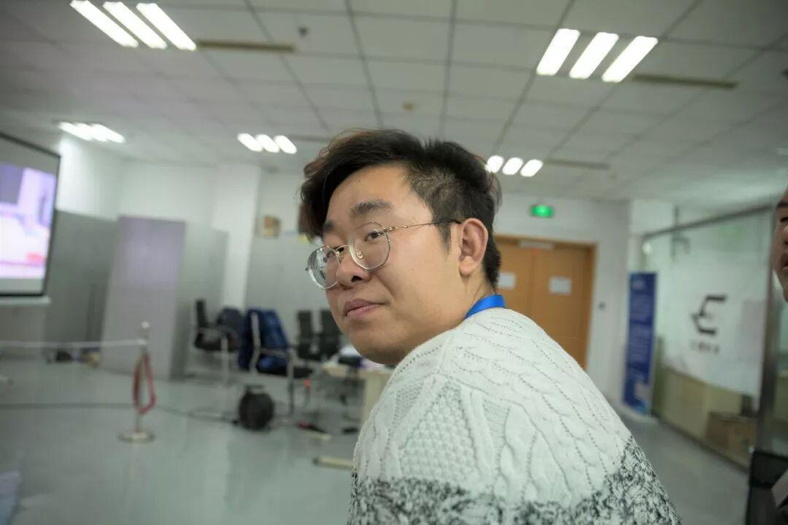
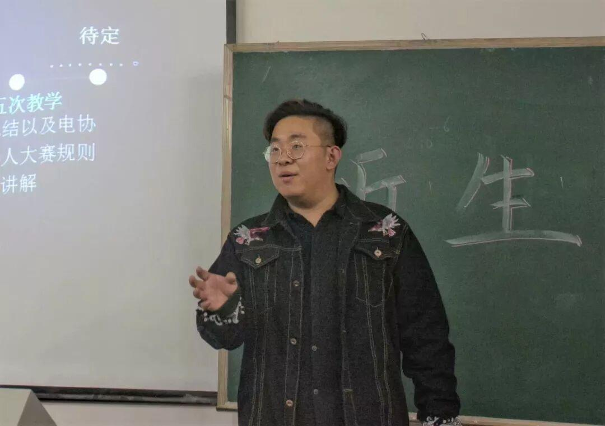
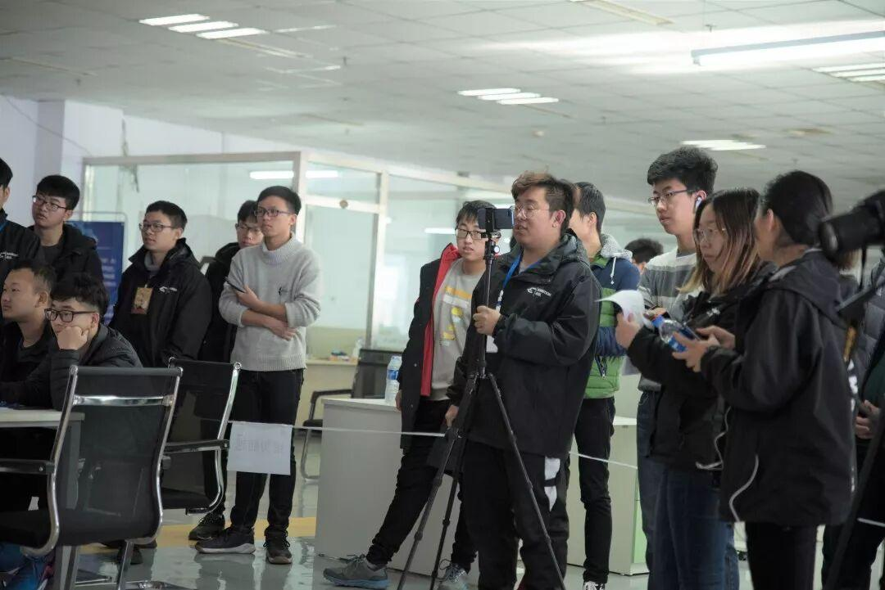
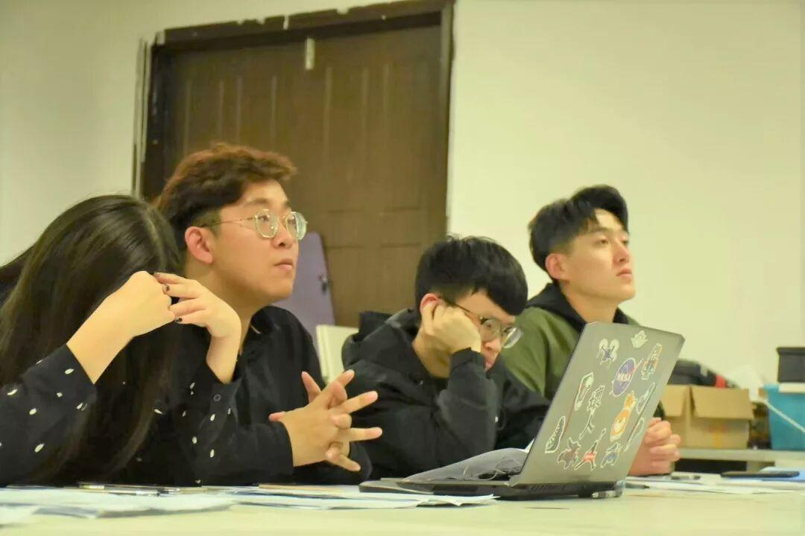
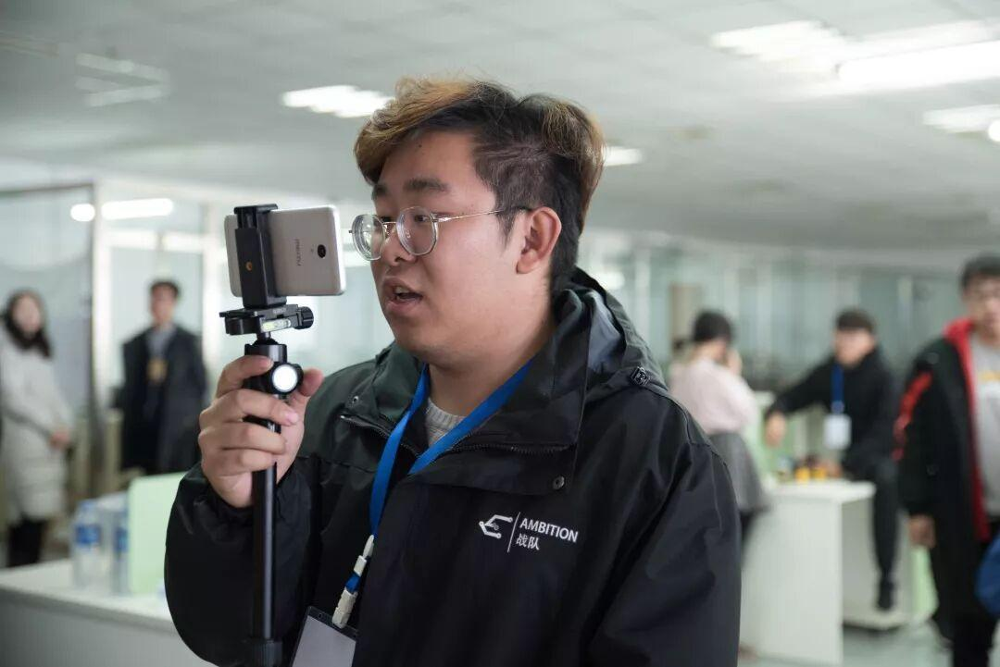
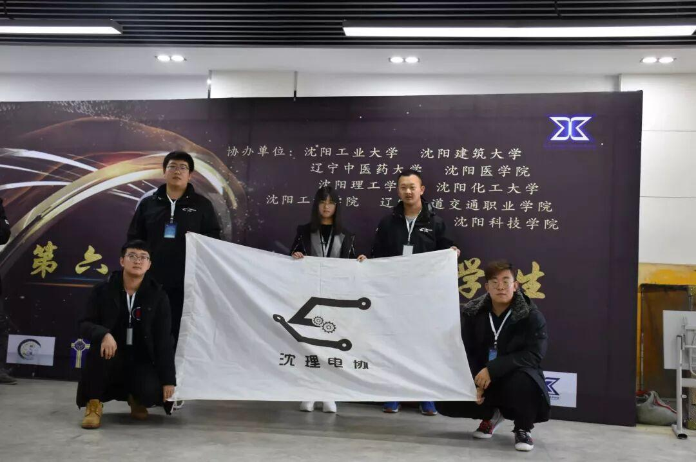

人物专访：一位才华与实力并存的小哥哥

你点击关注，就分你小鱼干

理工杯已经结束了，不知道大家还记不记得B站为大家解说的声音巨、巨、巨、巨好听的小哥哥呀？
没错，本期我们就来介绍一下这位有才华的曹李钧小哥哥。

Q:首先来做个骚气严肃的自我介绍吧
A:没什么好介绍的，没什么特点也没什么特长的一个人，就是一个普普通通的技术宅
嘤嘤嘤，一点也不给小编面子，小编表示哭晕在厕所
Q：加入Ambition的原因是什么？
A:圆个梦？大概都会这么说吧。
小编被公主抱回来了...

小哥哥内心os:还公主抱？啧啧啧
Q:你心目中的机甲大师是什么样子呢？
A:总归不是那种满键盘飞代码，活在梦里的那种人。
Emmm......
Q:为什么想参加RoboMaster?
A:这个问题说实话，和第二个有啥区别。。。
小编已受到一万点伤害_(:3」∠❀)_

小哥哥：给你个眼神自行体会
Q:聊聊你对新赛季规则对英雄的改变的看法吧
A:主办方还是想拖节奏，今年的策略性更强了，肉搏削弱了。
如此犀利
Q:作为空中机器人小组的组长，你在带队员的过程中遇到了哪些问题呢？
A:还是进度问题，首先就是装配精度不够，其次就是第一年自己做飞机，还是直接上大型植保机，难度还是不小。
哇，专业(✪▽✪)

Q:备赛过程中遇到了什么困难，想过放弃吗？
A:困难是有，也从来没停止过，放弃是不可能得了，既然来了，就干下去吧。
蒽，让我们一起加油干下去吧！
Q: 是什么让你坚持不懈、始终如一呢？
A:单身狗没别的事情？
小哥哥这么可怜，小姐姐你在哪里呀？？？

认真的样子也好帅
Q:队伍中有什么难忘的事或者难忘的人吗？
A:比赛还没开始，谈不上什么难忘，但是我们都在努力着让这一年变得难忘。
无论结果如何，只要我们拼尽全力，这一年将会是我们生命中色彩最浓重的一笔
Q:为了参加这个比赛，你都放弃了什么东西呢？
A:谈不上放弃，因为到了这里，才知道你自己是谁，你自己是为了什么而一直向前走。相比于这些，一切的放弃都不值得一提。
没错，RM就是如此有魅力

Q:对RM2019新赛季有什么期望？
A:尽人事，听天命。
我们会是最棒哒✧٩(ˊωˋ*)و✧
Q:个人有什么未来规划呢？
A:先把RM做好吧。
怀挺！！！

接下来让我们进入快问快答模式
Q:身高？体重？三围？
A:160，320，256
Q:是否有女朋友？
A:没有
Q:有没有喜欢的人？
A:有
Q:还记得有多少女生追过你吗？
A:没有过
Q:你认为你最吸引女生的地方是？
A:没有
Q:你认为女生最吸引你的地方是？
A:不想说
Q:假如你有女朋友，女朋友和机器人掉到河里，先救哪一个？
A:这个问题纯粹是来引战的
Q:你也偏爱骚粉吗？
A:还行吧，主要是平时闲得没啥事了，搞搞事情弄个粉色也不错
虽然这次专访让小编心力交瘁，但我们还是得回到正题|･ω･｀)，还记得刚才曹李钧小哥哥说过有喜欢的人吗？本期主题就是全网通缉那位小姐姐啦～(￣▽￣～)~有认识那位小姐姐的，欢迎评论哦，有表白小哥哥、想要小哥哥联系方式的也可以评论呦

编辑:李亭熹
图片:信息部

欢迎扫码关注哦